Guide des options : poche passepoilée, à rabat ou fendue
Une poche passepoilée se coud dans une fente pratiquée dans le vêtement : seule l’ouverture se voit à l’extérieur, la poche est cachée à l’intérieur. L’ouverture peut être bordée d’une ou de deux lèvres, les passepoils, recouverte d’un rabat, ou simplement parementée : c’est alors une poche fendue.
Ce patron propose cinq types de poche : double passepoil, un passepoil, un passepoil avec rabat, poche fendue et poche fendue avec rabat. Il se pose sur n’importe quel vêtement, veste, manteau, pantalon, jupe ou robe, droit, incliné ou vertical.
Type de poche
Cinq possibilités :
- Double passepoil : deux lèvres égales bordent l’ouverture, en haut et en bas.
- Un passepoil : une seule lèvre, plus large, couvre toute l’ouverture.
- Un passepoil avec rabat : la même lèvre, avec un rabat glissé dans le haut de l’ouverture, qui la recouvre.
- Poche fendue : ni lèvre ni rabat. L’ouverture est une simple fente aux bords nets, presque fermée au repos.
- Poche fendue avec rabat : la même fente, recouverte d’un rabat.
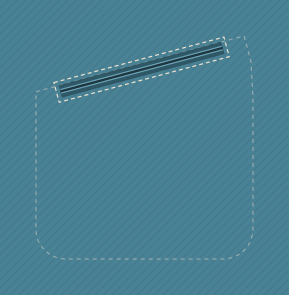
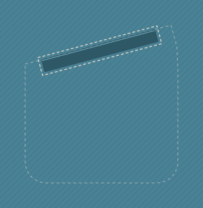
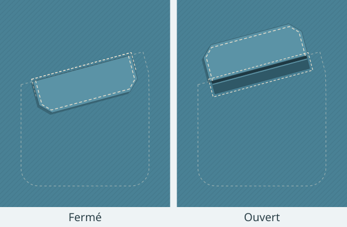
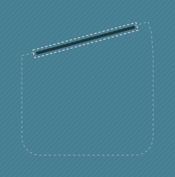
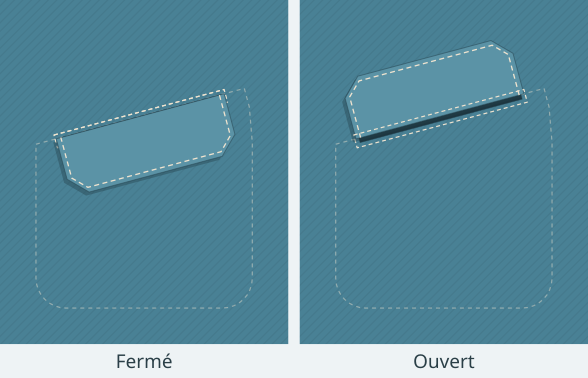
Les poches à rabat se montrent en deux vues, fermée et ouverte (rabat levé).
Ouverture
Longueur : de 8 à 20 cm, 14 cm par défaut. Pour y glisser toute la main, comptez au moins 16 cm.
Angle : de 0° (ouverture horizontale) à 90° (ouverture verticale), 15° par défaut.
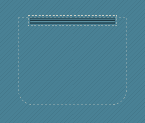
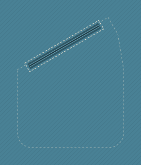
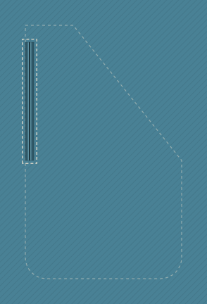
Avec un rabat, l’angle est limité à 45° pour un rabat libre ; au-delà, le rabat doit être boutonné (voir « Rabat »).
Poche gauche, poche droite ou paire
Dès que l’ouverture est inclinée, la poche gauche et la poche droite sont l’image l’une de l’autre dans un miroir. Le menu « Côté » (actif dès que l’angle est supérieur à 0°) propose :
- Les deux (une paire), choix par défaut : le patron contient les deux poches, repérées (a) poche gauche et (b) poche droite.
- Poche droite
- Poche gauche
Respectez l’endroit et l’envers du tissu lorsqu’ils sont différents : une pièce retournée donnerait une ouverture inclinée dans le mauvais sens. Cela vaut aussi pour le cache du cadre, à poser sur l’endroit du vêtement.
Lèvres
La lèvre est la bande de tissu pliée qui borde l’ouverture. On règle sa largeur visible :
- Double passepoil : de 0,4 à 0,7 cm par lèvre, 0,5 cm par défaut.
- Un passepoil : de 1 à 2,5 cm, 1,5 cm par défaut.
Plus la lèvre est étroite, plus le passepoil est délicat à réaliser. Pour une première poche, gardez 0,5 cm ou plus en double passepoil.
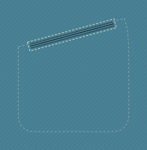
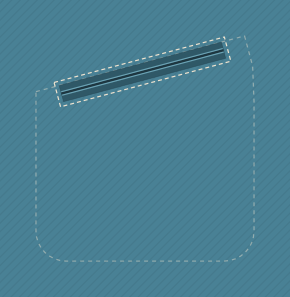
Rabat
Le rabat recouvre l’ouverture. Il se combine avec un passepoil ou avec une poche fendue.
- Hauteur visible : réglable, de 4 à 7 cm, 5 cm par défaut.
- Forme : rectangulaire, à angles coupés ou à angles arrondis.
- Bouton : le rabat peut être boutonné. Au-delà de 45° d’inclinaison, il doit l’être, sinon il ne tient pas fermé : la case « Rabat boutonné » se coche alors d’elle-même.
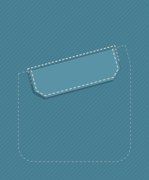
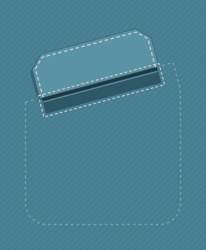
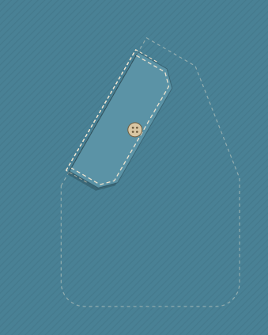
Poche
La poche est cachée à l’intérieur du vêtement. On règle sa profondeur utile, mesurée sous le point bas de l’ouverture : de 8 à 25 cm, 14 cm par défaut. Sa largeur suit la longueur de l’ouverture.
Les pièces du patron
Selon le type de poche, le patron contient les pièces suivantes (par poche) :
| Pièce | Dans | Pour |
|---|---|---|
| Cache du cadre | papier | tous les types : il sert à tracer l’ouverture sur l’endroit du vêtement |
| Renfort de l’ouverture | thermocollant | tous les types |
| Passepoil | tissu principal ou contrastant | double passepoil (2), un passepoil (1) |
| Entoilage du passepoil | thermocollant | types à passepoil |
| Garniture | tissu principal ou contrastant | tous les types |
| Dessus de poche | doublure | types à passepoil |
| Dessus de poche retourné | tissu principal s’il est fin, sinon doublure et garniture | poches fendues |
| Dessous de poche | doublure | tous les types |
| Rabat | tissu principal ou contrastant | types à rabat |
| Entoilage du rabat | thermocollant | types à rabat |
Les pièces thermocollantes n’ont pas de marge de couture.
Voir aussi le guide de couture.